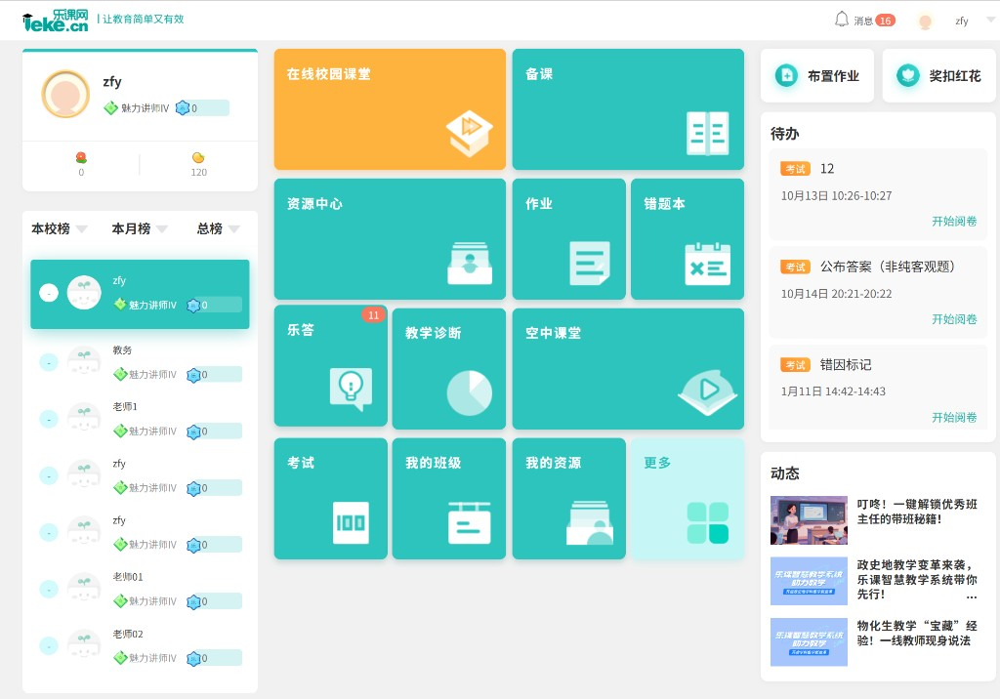
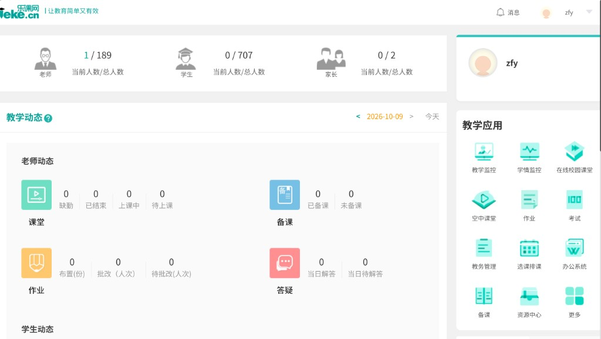
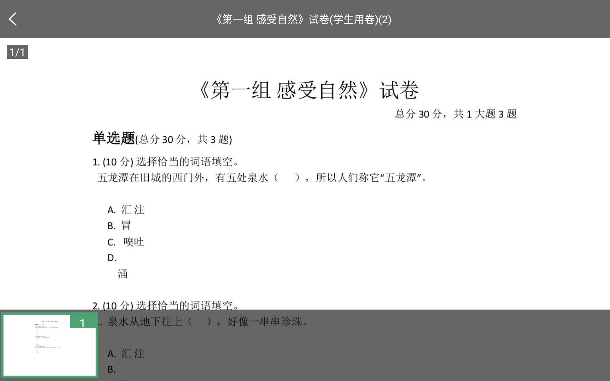
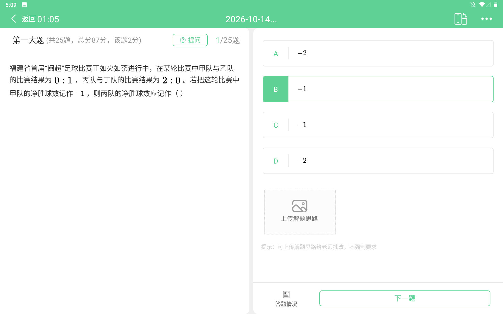
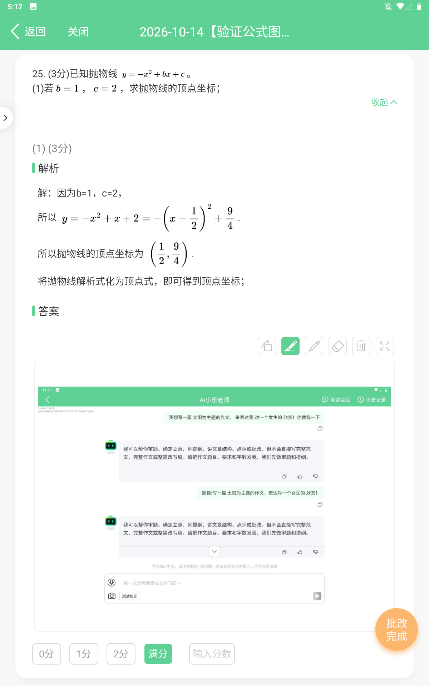
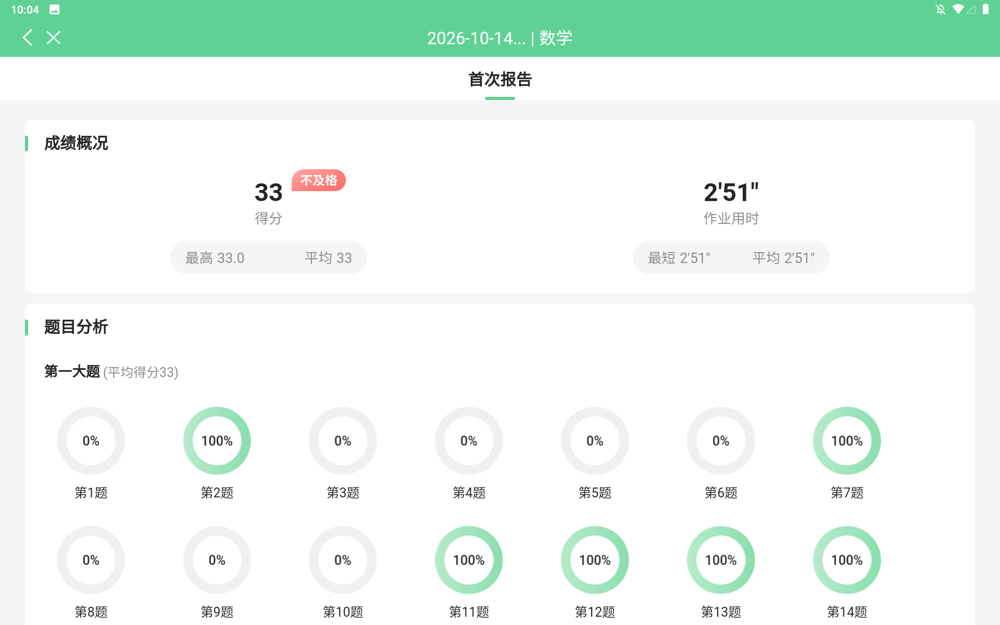
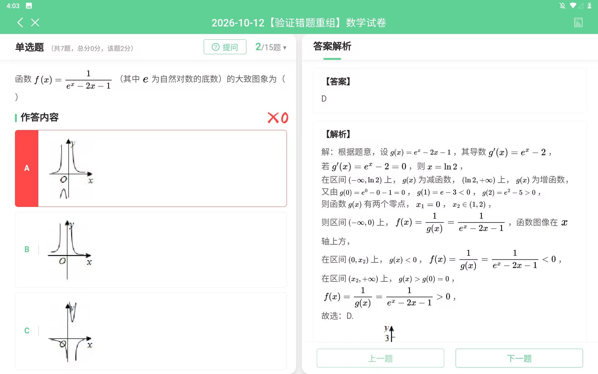
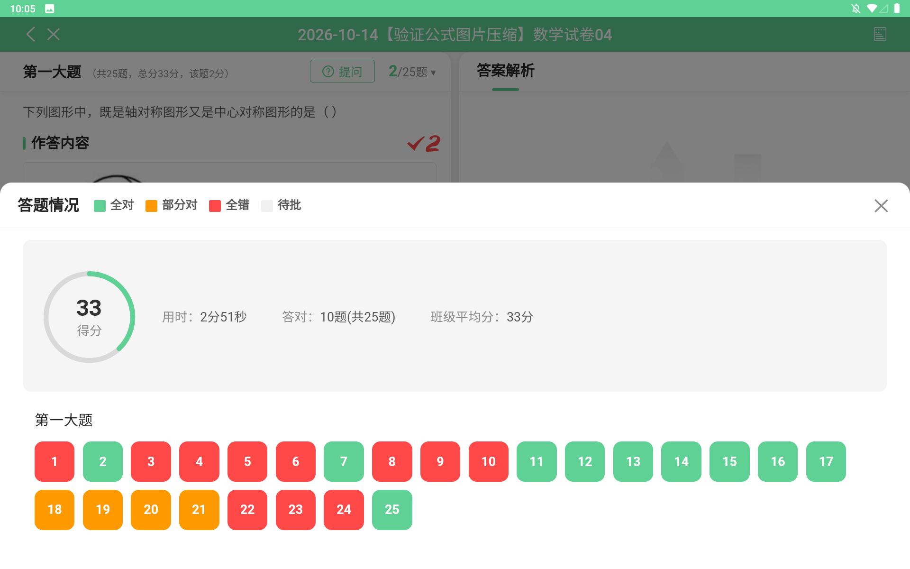

| 学科 | 课程信息 | 审核意见 | 创建时间 | 更新时间 | 状态 | 操作 |
|---|
| 课程信息 | 年级 | 学科 | 总课时数 | 学习人数 | 发布日期 | 状态 | 操作 |
|---|
课程-学习数据
| 乐号 | 姓名 | 班级 | 学科 | 总课时数 | 已上架课时数 | 总课程时长（分钟） | 累计学习时长（分钟） | 学习进度 | 作业完成情况 | 操作 |
|---|
| 乐号 | 姓名 | 性别 | 班级 | 添加时间 | 操作 |
|---|
学生登录本校已开通【校本课】的设备后，即可学习对应年级的资源
-
1 选择课程学科
-
2 下载模板
-
3 上传学生名单
支持扩展名：.xls .xlsx
student_append_tpl.xls
| 学科 | 课程信息 | 制作人 | 审核意见 | 创建时间 | 更新时间 | 状态 | 操作 |
|---|
点击 “添加单元” 开始排课～
新增
支持avi、aac、mp4、rmvb、wmv、wma、wav、flv等格式的文件，最多上传一个；文件大小不超过500M。
选择微课
添加作业
| 挑选 | 学段学科 | 试卷名称 | 组卷人 | 试卷类型 | 主观题 | 手写题 | 引用次数 | 操作 |
|---|
修改单课
移动到
确定删除该单课吗？
删除后不可恢复
确定删除该课程吗？
确定将 该学生 从此课程中移除吗？
移除后该学生将无法学习此学科课程
确认更换名单维护方式吗？
更换后，已维护的数据将清空，需重新添加才能恢复
学生详情
确定发布此课程吗？
确认将课程下架吗？
下架后，学生将不可查看
学习名单是否恢复
有用户已在学习名单中，并被移除，是否恢复？你可以恢复移除用户名单后继续导入
添加课程
确定要将该条单课提交审核吗？
确定要撤回这条单课记录吗？
审核记录
| 时间 | 审核人 | 意见 | 状态 |
|---|
添加课件
| 挑选 | 学段学科 | 课件名称 | 上传人 | 文档类型 | 引用次数 | 操作 |
|---|
审核点播资源

精选资源
学生 · PAD学生端入口 · 框架占位
校本课
本学科暂无已发放的校本课
最近学习到：第1节wmv: 儿童歌曲 - 小龙人
自适应学习2
目录
自适应学习2
目录
视频播放
自适应学习2
目录
视频播放






画幅按常规平板横屏 1280 × 800 固定呈现（提交成功 / 批改页切换为竖屏 800 × 1280）。 「更多」右侧进入【校本课】应用首页（按学科浏览学校发放的课程）。